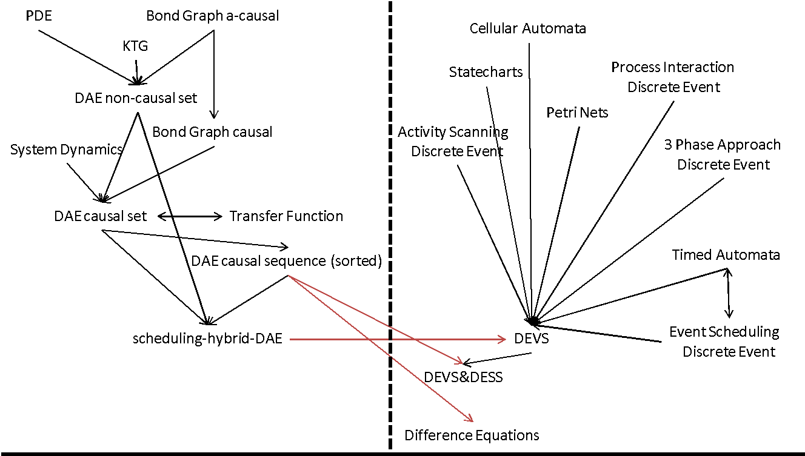
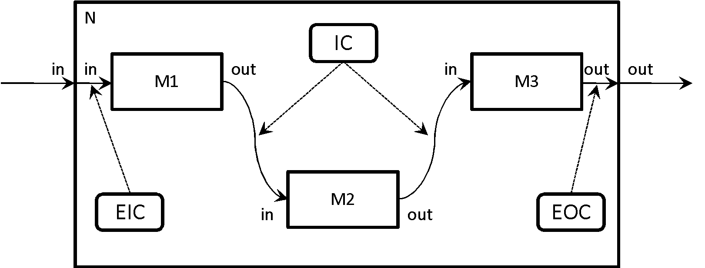
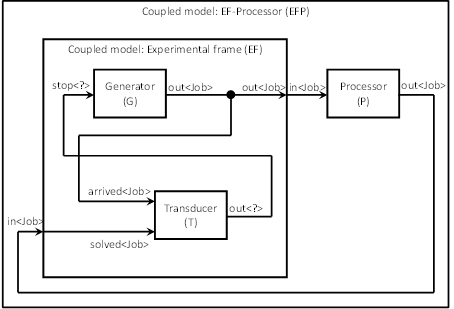
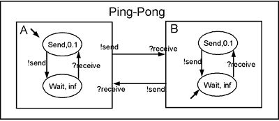
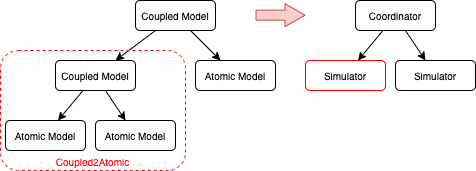

xDEVS user's manual
Table of Contents
Introduction to xDEVS
Introduction
xDEVS stands for A cross-platform (x) Discrete EVent System simulator. This library includes a set of C, C++, C#, Go, Java, Python and Rust repositories that provide an event-driven simulation interface. This interface follows the formalism Discrete Event System Specification (DEVS). The project final goal is to elaborate the fastest DEVS simulation interface with capacity to simulate models in virtual and real time, and to run simulations in sequential (single-threaded), parallel (multi-threaded) and distributed (not shared memory) architectures.
Research in the xDEVS interface can be found in xDEVS: A toolkit for interoperable modeling and simulation of formal discrete event systems. Please, cite our article in case you find xDEVS useful. This way we can gain visibility:
- Risco-Martín, JL, Mittal, S, Henares, K, Cardenas, R, Arroba, P. xDEVS: A toolkit for interoperable modeling and simulation of formal discrete event systems. Softw Pract Exper. 2022; 1- 42. https://doi.org/10.1002/spe.3168
There are seven repositories associated with xDEVS, each one offering the equivalent simulation interface for each corresponding programming language.
- xDEVS/C (xdevs.c)
- xDEVS/C++ (xdevs.cpp)
- xDEVS/C# (xdevs.cs)
- xDEVS/Go (xdevs.go)
- xDEVS/Java (xdevs.java) - API documentation
- xDEVS/Python (xdevs.py)
- xDEVS/Rust (xdevs.rs)
- xDEVS/Rust for embedded systems (xdevsnostd.rs)
All the repositories are included as submodules inside this main repository.
The xDEVS user's manual can be found here.
Top features
- PDEVS Modeling and Simulation formalism
- Object-Oriented Programming
- Support for sequential, parallel and distributed (this last feature only in Java and Python, for now) architectures.
- Good performance, compared to other simulation engines
Quick start
Switch to the corresponding particular language. A README file will be found to start with minimal examples and demos.
The DEVS formalism
The Discrete EVent system Specification (DEVS) formalism [1] was first introduced by Zeigler in 1976, to provide a rigorous common basis for discrete-event modeling and simulation. A "common" basis means that it is possible to express popular discrete-event formalisms such as event-scheduling, activity-scanning and process-interaction using the DEVS formalism.
The class of formalisms denoted as discrete-event is characterized by a continuous time base where only a finite number of events can occur during a finite time-span. This contrasts with Discrete Time System Specification (DTSS) formalisms where the time base is isomorphic to N, and with Differential Equation System Specification (DESS, or continuous-time) formalisms in which the state of the system may change continuously over time.
The Formalism Transformation Graph (FTG) published by H. Vangheluwe in [3] and shown in Figure 1, depicts behavior-conserving transformations between some important formalisms. The graph distinguishes between continuous-time formalisms on the left-hand side, and discrete formalisms (both discrete-time and discrete-event) on the right-hand side. Although the graph suggests that formalisms can be mapped onto a common formalism on their respective sides, very few transformations allow crossing the middle-line: this illustrates why hybrid systems (those that bring together both discrete and continuous systems) are difficult to solve.
 Figure 1. Formalism transformation graph (FTG) [3].
The traditional approach to solve continuous-time problems is based on discretization, which approximates a continuous-time model by a discrete-time system (difference equations). A partitioning of the time-axis, as is the case in discretization, is however hard to harmonize with a partitioning of the state space, as is performed in discrete-event systems. In this regard, mapping continuous-time formalisms (ODEs and semi-explicit DAEs) onto the DEVS formalism (this corresponds to the arrow going from "scheduling-hybrid-DAE" to "DEVS" on the FTG) may be performed through quantization.
The closure property (under composition or coupling) of systems such as DEVS offers the possibility to describe a model as a hierarchical composition of simpler sub-components. Apart from the obvious advantages associated with modularity (conceptual level, component reusability), a significant gain in the efficiency of simulating large, complex dynamic systems can also be achieved by using multi-rate integration (employing different integration frame rates for the simulation of fast and slow sub-components), either on a single or on multiple processors (parallelization).
Although some continuous-time formalisms (e.g., causal-block diagram simulation tools) allow model hierarchization, multi-rate integration mixes poorly with traditional approaches where discretization along the time-axis forces the simulator to work explicitly with the global time base. This, in contrast to discrete-event formalisms where the simulator is concerned with local state space changes, and the time base is dealt with implicitly. Discrete event concepts are thus better suited for parallel distributed simulation, and much effort has been devoted to the development of conservative (e.g., Chandy-Misra approach), optimistic (e.g., Time-Warp) and real-time (e.g., DARPA's Distributed Interactive Simulation) parallel discrete event simulation techniques. The relevance of DEVS in that context is illustrated by the concept of the DEVS bus which concerns the use of DEVS models as "wrappers" to enable a variety of models to inter operate in a networked simulation. The DEVS bus has been implemented on top of the DoD's High Level Architecture (HLA) standard, itself based on the Run-Time Infrastructure (RTI) protocol.
According to DEVS theory, the system of interest is seen as a model and the corresponding simulator. The model represents a simplified version of reality and its structure. The model is built considering the conditions of experimentation of the system of interest, including the work conditions of the real system and its application domain. Thus, the model is restricted to the experimental framework under which it was developed.
This model is subsequently used to build a simulator. The simulator is able to change the state of the model by running all the necessary state transitions already defined in the model. All the transitions are executed in an appropriate order, according to the model definition.
DEVS was created for modeling and simulation of discrete-event dynamic systems. As a result, it defines a formal way to define systems whose states change either upon the reception of an input event or due to the expiration of a time delay. In order to deal with the system under study, the model can be organized hierarchically in such a way that higher-level components in a system are decomposed into simpler elements.
The formal separation between model and simulator and the hierarchical and modular nature of the DEVS formalism have enabled carrying out of formal proofs on the different entities under study. One of them is the proof of composability of the subcomponents (including legitimacy and equivalence between multicomponent models). The second is the ability to conduct proofs of correctness of the simulation algorithms, which result in simulators rigorously verified. All the proofs are based on formal transformations between each of the representations, trying to prove the equivalence between the entities under study at different levels of abstraction. For instance, we can prove that the mathematical entity simulator is able to execute correctly the behavior described by the mathematical entity model, which represents the system. Different mathematical mechanisms are used to prove these points, including the mathematical manipulation of the abstraction hierarchy, observation of I/O trajectories (to ensure that different levels of specification correctly describe the system’ structure) and decomposition concepts (DEVS is closed under composition, which means that a composite model integrated by multiple components is equivalent to an atomic component).
The reader should refer to the book Theory of Modeling and Simulation [1], to understand the details behind the mathematical background of these techniques.
The parallel DEVS formalism
The parallel DEVS approach was introduced, after 15 years, as a revision of Classic DEVS. Currently, parallel DEVS is the prevalent DEVS, implemented in many libraries. In the following, unless it is explicitly noted, the use of DEVS implies parallel DEVS.
DEVS enables the representation of a system by three sets and five functions: input set (X), output set (Y), state set (S), external transition function (δext), internal transition function (δint), confluent function (δcon), output function (λ), and time advance function (ta).
DEVS models are of two types: atomic and coupled. Atomic DEVS processes input events based on their model's current state and condition, generates output events and transition to the next state. The coupled model is the aggregation/composition of two or more atomic and coupled models connected by explicit couplings. Particularly, an atomic model is defined by the following equation:
A=< X, Y, S, δext, δint, δcon, λ, ta >
where:
- X is the input set, usually defined as the set of pairs port-value (see DEVS with ports in [1]).
- Y is the output set, usually defined as the set of pairs port-value (see DEVS with ports in [1])..
- S is the state set.
- δext : Q × Xb → S is the external transition function, Q={(s,e):s ∈ S, e ∈ [0,ta(s)]} is total state set and e is the elapsed time since the last transition, whereas Xb is the set of bags over elements in X. This function is automatically executed when an external event arrives, changing the current state if needed.
- δint : S → S is the internal transition function. This function is executed right after the output (λ) function and is used to change the state S.
- δcon: Q × Xb → S is the confluent function. This transition decides the next state in cases of collision between external and internal events, i.e., an external event is received and elapsed time equals time-advance. Typically, δcon(s,ta(s),x) = δext(δint(s,0,x).
- λ : S → Yb is the output function. Yb is the set of bags over elements in Y. When the time elapsed since the last output function is equal to ta(s), then λ is automatically executed.
- ta : S → R0+ ∪ ∞ is the time advance function.
The formal definition of a coupled model is described as:
M = < X, Y, C, EIC, EOC, IC >
where:
- X is the input set, usually defined as the set of pairs port-value (see DEVS with ports in [1])..
- Y is the output set, usually defined as the set of pairs port-value (see DEVS with ports in [1])..
- C is the set of DEVS component models (atomic or coupled). Note that C makes this definition recursive.
- EIC is the external input coupling relation, from external input ports of M to component input ports of C.
- EOC is the external output coupling relation, from component output ports of C to external output ports of M.
- IC is the internal coupling relation, from component output ports of ci ∈ C to component output ports of cj ∈ C, provided that i ≠ j.
Given the recursive definition of M, a coupled model can itself be a part of a component in a larger coupled model system giving rise to a hierarchical DEVS model construction.
EXAMPLE 1
A processor atomic model consumes a job j. When the processor receives a job through an input port, thus the processor remains busy until the processing time jp is finished. Then it sends the job through an output port.
The processor model can be formally described as
Processor=〈X,S,Y,δint,δext,δcon,λ,ta〉
- X = {(in, j ∈ J)}, where J is a set of Jobs.
- S = phase={"busy","passive"} × σ ∈ R0+ × j ∈ J
- Y = {(out, j ∈ J)}
- ta(phase,σ,j) = σ
- λ(phase,σ,j) = j
- δint(phase,σ,j) = ("passive", ∞, ∅)
- δext(phase,σ,j,e,(in,j')) = {("busy",jp',j') if phase="passive", ("busy",σ-e,j) if phase="busy"
- δcon(phase,σ,j,(in,j')) = δext(δint(phase,σ,j),0,(in,j'))
EXAMPLE 2
Figure 2 shows an example of a DEVS coupled model with three components, M1, M2 y M3, as well as their couplings. These models are interconnected through the corresponding I/O ports presented in the Figure. The models are connected to the external coupled models through the EIC and EOC connectors. M1, M2 and M3 can be atomic or coupled models.
 Figure 2. A DEVS coupled model
Following the previous coupled model definition, the model in Figure 2 can be formally defined as:
N =〈 X, Y, C, EIC, EOC, IC 〉
where:
- X is the set of input events.
- Y is the set of output events.
- C = {M1,M2,M3}
- EIC = {(N,in)→(M1,in)}
- EOC = {(M3,out)→(N,out)}
- IC = {(M1,out)→(M2,in),(M2,out)→(M3,in)}
EXAMPLE 3
The Experimental frame – Processor model is usually presented as one of the initial examples to start to practice with DEVS modeling and simulation. It is a DEVS coupled model consisting of three atomic models and one coupled model (see Figure 3).
 Figure 3. Experimental frame (ef)-processor (p) model; boxes: models; arrows: couplings; arrow labels: input/output port names.
The Generator atomic model generates job-messages at fixed time intervals and sends them via the "out" port. The Transducer atomic model accepts job-messages from the generator at its "arrived" port and remembers their arrival time instances. It also accepts job-messages at the "solved" port. When a message arrives at the "solved" port, the transducer matches this job with the previous job that had arrived on the "arrived" port earlier and calculates their time difference. Together, these two atomic models form an Experimental frame coupled model. The experimental frame sends the generators job messages on the "out" port and forwards the messages received on its "in" port to the transducers "solved" port. The transducer observes the response (in this case the turnaround time) of messages that are injected into an observed system. The observed system in this case is the Processor atomic model. A processor accepts jobs at its "in" port and sends them via "out" port again after some finite, but non-zero time period. If the processor is busy when a new job arrives, the processor discards it. Finally the transducer stops the generation of jobs by sending any event from its "out" port to the "stop" port at the generator, after a given simulation time interval.
Based on Figure 3, we can define the coupled model for this example as:
EFP=〈 X, Y, C, EIC, EOC, IC 〉
where:
- X = ∅.
- Y = ∅.
- C = {EF,P}
- EIC = ∅
- EOC = ∅
- IC = {(EF,out)→(P,in),(P,out)→(EF,in)}
The Experimental Frame coupled model can be defined as:
EF=〈 X, Y, C, EIC, EOC, IC 〉
where:
- X = {(in,j∈J)}, where J is a set of Jobs.
- Y = {(out,j∈J)}, where J is a set of Jobs.
- C = {G,T}
- EIC = {(EF,in)→(T,solved)}
- EOC = {(G,out)→(EF,out)}
- IC = {(G,out)→(T,arrived),(T,out)→(Generator,stop)}
We have defined the behavior of the Processor model in a previous example. Now, we describe the functionality of both the Generator and Transduced models. The Generator model can be formally described as
Generator=〈 X, S, Y, δint, δext, δcon, λ, ta 〉
- X = {(stop,ν)}, where ν is any event
- S = (phase={"active","passive"})×σ∈R0+×i=1,2,…,N:ji∈J
- Y = {(out,ji∈ J)}
- ta(phase,σ,i) = σ
- λ(phase,σ,i) = ji
- δint(phase,σ,i) = ("active",σ,i+1)
- δext(phase,σ,i,e,(in,ν)) = ("passive",∞,i)
- δcon(phase,σ,i,(in,ν)) = δext(δint(phase,σ,i),0,(in,ν))
The Transducer model can be formally described as
Transducer=〈 X, S, Y, δint, δext, δcon, λ, ta 〉
- X = {(arrived,j∈J),(solved,j∈J}, where J is a set of jobs
- S = (phase = {"active","passive"}) × (σ ∈ R0+ ) × (clock ∈ R0+ × JA∈J × JS∈J where JA and JS are sets of arrived and solved jobs, respectively.
- Y = {(stop,ν)}, where ν is any event.
- ta(phase,σ,clock,JA,JS) = σ
- λ(phase,σ,clock,JA,JS) = ν
- δint(phase,σ,clock,JA,JS) = ("passive",∞,clock+σ,JA,JS)
- δext(phase,σ,clock,JA,JS,e,(arrived,ja),(solved,js))= … … = (active,σ-e,clock+e,JA={ja,JA} if ja≠∅, JS={js,JS}:jts=clock if js≠∅) , where the time in which the job is solved is set to clock with jts = clock.
- δcon(phase,σ,clock,JA,JS,(arrived,ja),(solved,js))=δext(δint(phase,σ,clock,JA,JS),0,(arrived,ja),(solved,js))
Bibliography
- Zeigler, B. P.; Muzy, A. & Kofman, E. Theory of modeling and simulation: discrete event & iterative system computational foundations Academic press, 2018.
- Mittal, S. & Risco-Martín, J. L. Netcentric system of systems engineering with DEVS unified process CRC Press, 2013.
- Vangheluwe, H. DEVS as a common denominator for multi-formalism hybrid systems modelling CACSD. Conference Proceedings. IEEE International Symposium on Computer-Aided Control System Design (Cat. No.00TH8537), 2000, 129-134
Getting started with xDEVS
In this section, we introduce the basics of xDEVS by developing a simple Ping Pong model. This model is inspired by the DEVS formalism as described on Wikipedia: https://en.wikipedia.org/wiki/DEVS

The Ping Pong model simulates two players hitting a ball back and forth. We will define the model's behavior using output, internal transition, and external transition functions.
Output Function
The output function \(\lambda\) determines the output based on the current state:
\[ \lambda(\text{Send}, \sigma) = !\text{send} \] \[ \lambda(\text{Wait}, \sigma) = \emptyset \]
This is implemented in Python as follows:
# Version 1.0 def lambdaf(self): if self.phase_is("Send"): self.o_send.add("!send") print(f"{self.name} sends the ball") # Version 2.0 def lambdaf(self): self.o_send.add("!send") print(f"{self.name} sends the ball")
Internal Transition Function
The internal transition function \(\delta_{int}\) updates the state based on the elapsed time:
\[ \delta_{int}(\text{Send}, \sigma) = (\text{Wait}, \infty) \] \[ \delta_{int}(\text{Wait}, \sigma) = (\text{Send}, 0.1) \]
Implemented in Python:
# Version 1.0 def deltint(self): if (self.phase == "Wait"): self.hold_in("Send", 0.1) elif (self.phase == "Send"): self.hold_in("Wait", INFINITY) # Version 2.0 def deltint(self): if (self.phase == "Send"): self.hold_in("Wait", INFINITY) # Version 3.0 def deltint(self): self.hold_in("Wait", INFINITY)
External Transition Function
The external transition function \(\delta_{ext}\) modifies the state in response to external events:
\[ \delta_{ext}(((\text{Wait}, \sigma), t_e), ?\text{receive}) = (\text{Send}, 0.1) \]
Python implementation:
# Version 1.0 def deltext(self, e): self.continuef(e) # VERY IMPORTANT!!! print(f"{self.name} receives the ball") if self.i_receive: self.hold_in("Send", 0.1) # Version 2.0 def deltext(self, e): self.continuef(e) # VERY IMPORTANT!!! print(f"{self.name} receives the ball") self.hold_in("Send", 0.1)
Complete model implementation
The complete Python implementation of the Ping Pong model using xDEVS is as follows:
import logging from xdevs import get_logger from xdevs.models import Atomic, Coupled, Port, INFINITY from xdevs.sim import Coordinator logger = get_logger(__name__, logging.INFO) PHASE_SEND:str = "Send" PHASE_WAIT:str = "Wait" class Player(Atomic): def __init__(self, name, sender:bool=False): Atomic.__init__(self, name) self.sender = sender self.i_receive = Port(str, "i_receive") self.o_send = Port(str, "o_send") self.add_in_port(self.i_receive) self.add_out_port(self.o_send) def initialize(self): if (self.sender): self.hold_in(PHASE_SEND, 0.1) else: self.hold_in(PHASE_WAIT, INFINITY) def exit(self): pass def lambdaf(self): if (self.phase == PHASE_SEND): self.o_send.add("!send") logger.info(f"{self.name} sends the ball") def deltint(self): if (self.phase == PHASE_SEND): self.hold_in(PHASE_WAIT, INFINITY) def deltext(self, e): self.continuef(e) logger.info(f"{self.name} receives the ball") if self.i_receive: self.hold_in(PHASE_SEND, 0.1) class PingPong(Coupled): def __init__(self): Coupled.__init__(self) player1 = Player("Player A", True) player2 = Player("Player B") self.add_component(player1) self.add_component(player2) self.add_coupling(player1.o_send, player2.i_receive) self.add_coupling(player2.o_send, player1.i_receive) if __name__ == "__main__": model = PingPong() coord = Coordinator(model) coord.initialize() coord.simulate(num_iters=10) coord.exit()
Running the model
To run the model, follow these steps on Ubuntu 22.04:
sudo apt install python3 python3-pip pip3 install -U xdevs python3 ping-pong.py Player A sends the ball Player B receives the ball Player B sends the ball Player A receives the ball Player A sends the ball Player B receives the ball ...
Building models in xDEVS
Atomic models
In xDEVS, atomic models are the fundamental building blocks for constructing simulation models. An atomic model in xDEVS encapsulates the behavior of a system component that cannot be further decomposed into smaller components. It defines the state changes and interactions of the component in response to internal and external events.
Structure of an atomic model
The Atomic class, derived from the Component class and marked as an abstract base class, serves as the base class for all atomic models in xDEVS. Here's a breakdown of its key components and functionalities:
- Initialization: The constructor initializes the atomic model, setting its name and initializing its phase to
passiveand its time advance (sigma) to infinity. This represents a state where the model is waiting indefinitely for an external event. - Time Advance Function (
ta): This property method returns the time until the next scheduled internal transition (sigma). It dictates how long the model stays in its current state before an internal transition occurs. - Internal Transition (
deltint): This abstract method must be implemented by all subclasses. It defines the state changes that occur when an internal event is triggered after the elapse of the time advance. - External Transition (
deltext): This abstract method handles state changes in response to external events. It takes the elapsed time (e) since the last transition as an argument, allowing the model to update its state based on external inputs. - Output Function (
lambdaf): Another abstract method that specifies the output of the model just before an internal transition occurs. This function is crucial for sending outputs to other models in a coupled model configuration. - Confluent Transition (
deltcon): By default, this method handles the simultaneous occurrence of internal and external events. It first processes the internal transition and then the external transition with zero elapsed time. - State Management Methods: The methods
hold_in,activate,passivate, andcontinuefare utility functions to manage the model's state and timing:hold_in: Sets the model's phase and schedules the next internal transition.activate: Immediately triggers an internal transition by settingsigmato zero.passivate: Puts the model into a passive state with an infinite wait time.continuef: Adjusts the time advance by reducing it by the elapsed timee, useful for resuming after a paused state.
Implementing an atomic model
To implement an atomic model in xDEVS, you need to subclass the Atomic class and provide concrete implementations for the deltint, deltext, and lambdaf methods. Each method should define how the model reacts to different types of events and manages its state transitions effectively.
Here is a simple example of an atomic model that increments a counter:
class CounterModel(Atomic): def __init__(self, name=None): super().__init__(name) self.count = 0 self.hold_in("active", 1) # Active for 1 time unit def deltint(self): self.count += 1 self.hold_in("active", 1) # Schedule next increment def deltext(self, e): self.continuef(e) # Continue countdown def lambdaf(self): pass # No output def __str__(self): return f"CounterModel(name={self.name}, count={self.count})"
This model demonstrates basic internal and external transitions. It continuously counts upwards.
Ports
In xDEVS, ports are essential for enabling communication between atomic models and facilitating the flow of events in a coupled model configuration. Ports are used to send and receive messages, allowing models to interact with each other.
- Input Ports: These ports receive messages from other models. Each input port is associated with a specific type of message it can accept. When an external event occurs, the message is placed in the corresponding input port, and the
deltextmethod is invoked to handle the event. - Output Ports: These ports send messages to other models. Before an internal transition occurs, the
lambdafmethod generates the output, which is then placed in the appropriate output port. The coupled model configuration ensures that these messages are routed to the correct input ports of other models.
To define ports in an atomic model, you need to create instances of the Port class and add them to the model using the add_in_port and add_out_port methods. Here is an example demonstrating the use of ports in atomic models:
class Generator(Atomic): def __init__(self, name, period): super().__init__(name) self.i_stop = Port(Job, "i_stop") self.o_out = Port(Job, "o_out") self.add_in_port(self.i_stop) self.add_out_port(self.o_out) self.period = period self.job_counter = 1 def initialize(self): self.hold_in(PHASE_ACTIVE, self.period) def deltint(self): self.job_counter += 1 self.hold_in(PHASE_ACTIVE, self.period) def deltext(self, e): self.passivate() def lambdaf(self): self.o_out.add(Job(str(self.job_counter))) class Processor(Atomic): def __init__(self, name, proc_time): super().__init__(name) self.i_in = Port(Job, "i_in") self.o_out = Port(Job, "o_out") self.add_in_port(self.i_in) self.add_out_port(self.o_out) self.current_job = None self.proc_time = proc_time def initialize(self): self.passivate() def deltint(self): self.passivate() def deltext(self, e): if self.phase == PHASE_PASSIVE: self.current_job = self.i_in.get() self.hold_in(PHASE_ACTIVE, self.proc_time) self.continuef(e) def lambdaf(self): self.o_out.add(self.current_job)
In this example, the Generator model has input ports i_start and i_stop and an output port o_out. The Processor model has an input port i_in and an output port o_out. These ports facilitate the communication between the Generator and Processor models, allowing them to exchange Job messages.
By defining and using ports, you can create complex coupled models where multiple atomic models interact seamlessly, enabling sophisticated simulations of system behaviors.
Coupled models
In xDEVS, coupled models are composite models that consist of multiple atomic and/or other coupled models. They define the structure and interaction of these submodels, enabling the construction of complex systems by combining simpler components. Coupled models manage the routing of messages between their submodels and handle the overall coordination of events.
Structure of a coupled model
The Coupled class, derived from the Component class, serves as the base class for all coupled models in xDEVS. Here are the key components and functionalities of a coupled model:
- Submodels: A coupled model contains a collection of submodels, which can be either atomic models or other coupled models. These submodels are added to the coupled model using the
add_componentmethod. - Ports: Similar to atomic models, coupled models have input and output ports. These ports are used to receive external messages and send messages to other models outside the coupled model.
- Couplings: Couplings define the connections between the ports of submodels and the ports of the coupled model. There are three types of couplings:
- Internal Couplings: Connect the output ports of one submodel to the input ports of another submodel within the same coupled model.
- /External Input Couplings (EIC)*: Connect the input ports of the coupled model to the input ports of its submodels.
- /External Output Couplings (EOC)*: Connect the output ports of the submodels to the output ports of the coupled model.
- Routing: The coupled model is responsible for routing messages according to the defined couplings. When a message arrives at an input port, it is routed to the appropriate submodel(s) based on the EIC. Similarly, when a submodel generates an output, it is routed to other submodels or the coupled model's output ports based on the internal couplings and EOC.
Implementing a coupled model
To implement a coupled model in xDEVS, you need to subclass the Coupled class and define its submodels and couplings. Here is an example of a simple coupled model that combines a Generator and a Processor:
class BasicCoupledModel(Coupled): def __init__(self, name): super().__init__(name) # Define ports self.i_in = Port(Job, "i_in") self.o_out = Port(Job, "o_out") self.add_in_port(self.i_in) self.add_out_port(self.o_out) # Create submodels self.generator = Generator("Generator", period=5) self.processor = Processor("Processor", proc_time=3) # Add submodels to the coupled model self.add_component(self.generator) self.add_component(self.processor) # Define couplings self.add_coupling(self.generator.o_out, self.processor.i_in) # Internal coupling self.add_coupling(self.processor.o_out, self.o_out) # External output coupling self.add_coupling(self.i_in, self.generator.i_stop) # External input coupling
In this example, the BasicCoupledModel class defines a coupled model that includes a Generator and a Processor as submodels. The couplings are set up to route messages from the generator to the processor and from the processor to the coupled model's output port. Additionally, an external input coupling is defined to allow external messages to stop the generator.
By defining submodels and their couplings, you can create complex systems that simulate the interactions and behaviors of multiple components working together. Coupled models provide a powerful way to build hierarchical and modular simulations in xDEVS.
Models configuration
In this section, we will configure and run a simulation using the xDEVS framework. The provided source code defines several atomic models (Generator, Processor, and Transducer) and a coupled model (Gpt) that combines these atomic models. We will walk through the configuration and execution of the simulation.
- Importing Required Modules: The necessary modules and classes are imported, including logging, xDEVS components, and the simulation coordinator.
- Defining the Job Class:
The
Jobclass represents a job with a name and a timestamp. - Defining Atomic Models:
- Generator: Generates jobs at a specified period and sends them to the processor and transducer.
- Processor: Processes incoming jobs for a specified processing time.
- Transducer: Observes the system, collects statistics, and logs performance metrics.
- Defining the Coupled Model:
The
Gptclass is a coupled model that integrates the Generator, Processor, and Transducer models. It sets up the internal and external couplings to route messages between these submodels. - Running the Simulation:
The main block of the code creates an instance of the
Gptcoupled model, initializes the simulation coordinator, and runs the simulation.
Here is the complete source code for configuring and running the simulation:
import logging from xdevs import PHASE_ACTIVE, PHASE_PASSIVE, get_logger from xdevs.models import Atomic, Coupled, Port from xdevs.sim import Coordinator logger = get_logger(__name__, logging.DEBUG) PHASE_DONE = "done" class Job: def __init__(self, name): self.name = name self.time = 0 class Generator(Atomic): def __init__(self, name, period): super().__init__(name) self.i_stop = Port(Job, "i_stop") self.o_out = Port(Job, "o_out") self.add_in_port(self.i_stop) self.add_out_port(self.o_out) self.period = period self.job_counter = 1 def initialize(self): self.hold_in(PHASE_ACTIVE, self.period) def exit(self): pass def deltint(self): self.job_counter += 1 self.hold_in(PHASE_ACTIVE, self.period) def deltext(self, e): self.passivate() def lambdaf(self): self.o_out.add(Job(str(self.job_counter))) class Processor(Atomic): def __init__(self, name, proc_time): super().__init__(name) self.i_in = Port(Job, "i_in") self.o_out = Port(Job, "o_out") self.add_in_port(self.i_in) self.add_out_port(self.o_out) self.current_job = None self.proc_time = proc_time def initialize(self): self.passivate() def exit(self): pass def deltint(self): self.passivate() def deltext(self, e): if self.phase == PHASE_PASSIVE: self.current_job = self.i_in.get() self.hold_in(PHASE_ACTIVE, self.proc_time) self.continuef(e) def lambdaf(self): self.o_out.add(self.current_job) class Transducer(Atomic): def __init__(self, name, obs_time): super().__init__(name) self.i_arrived = Port(Job, "i_arrived") self.i_solved = Port(Job, "i_solved") self.o_out = Port(Job, "o_out") self.add_in_port(self.i_arrived) self.add_in_port(self.i_solved) self.add_out_port(self.o_out) self.jobs_arrived = [] self.jobs_solved = [] self.total_ta = 0 self.clock = 0 self.obs_time = obs_time def initialize(self): self.hold_in(PHASE_ACTIVE, self.obs_time) def exit(self): pass def deltint(self): self.clock += self.sigma if self.phase == PHASE_ACTIVE: if self.jobs_solved: avg_ta = self.total_ta / len(self.jobs_solved) throughput = len(self.jobs_solved) / self.clock if self.clock > 0 else 0 else: avg_ta = 0 throughput = 0 logger.info("End time: %f" % self.clock) logger.info("Jobs arrived: %d" % len(self.jobs_arrived)) logger.info("Jobs solved: %d" % len(self.jobs_solved)) logger.info("Average TA: %f" % avg_ta) logger.info("Throughput: %f\n" % throughput) self.hold_in(PHASE_DONE, 0) else: self.passivate() def deltext(self, e): self.clock += e if self.phase == PHASE_ACTIVE: if self.i_arrived: job = self.i_arrived.get() logger.info("Starting job %s @ t = %d" % (job.name, self.clock)) job.time = self.clock self.jobs_arrived.append(job) if self.i_solved: job = self.i_solved.get() logger.info("Job %s finished @ t = %d" % (job.name, self.clock)) self.total_ta += self.clock - job.time self.jobs_solved.append(job) self.continuef(e) def lambdaf(self): if self.phase == PHASE_DONE: self.o_out.add(Job("null")) class Gpt(Coupled): def __init__(self, name, period, obs_time): super().__init__(name) if period < 1: raise ValueError("period has to be greater than 0") if obs_time < 0: raise ValueError("obs_time has to be greater or equal than 0") gen = Generator("generator", period) proc = Processor("processor", 3*period) trans = Transducer("transducer", obs_time) self.add_component(gen) self.add_component(proc) self.add_component(trans) self.add_coupling(gen.o_out, proc.i_in) self.add_coupling(gen.o_out, trans.i_arrived) self.add_coupling(proc.o_out, trans.i_solved) self.add_coupling(trans.o_out, gen.i_stop) if __name__ == '__main__': gpt = Gpt("gpt", 1, 100) coord = Coordinator(gpt) coord.initialize() coord.simulate()
In this configuration:
- The
Generatormodel generates jobs at a specified period and sends them to theProcessorandTransducer. - The
Processormodel processes the jobs for a specified processing time. - The
Transducermodel observes the system, collects statistics, and logs performance metrics. - The
Gptcoupled model integrates these atomic models and sets up the necessary couplings to route messages between them. - The simulation is run by creating an instance of the
Gptmodel, initializing the coordinator, and calling thesimulatemethod.
Advanced features
These advanced features are mostly implemented in xDEVS/Java. In the following, all the examples will be provided using the xDEVS/Java API.
Wrappers
Adding compatibility between different DEVS simulation engines, and more specifically, between DEVS models developed in the same programming language, is the first step to designing a DEVS M&S interoperable framework. Thus, xDEVS incorporates adapters to interact with other simulation engines.
xDEVS includes wrappers for aDEVS 3.3 (in xDEVS/C++), DEVSJAVA 3 (in xDEVS/Java), and PyPDEVS 2.4.1 (in xDEVS/Python). The design of the other adapters follows the same pattern. Adding more wrappers is a straightforward process. The target model is added as an attribute, and each DEVS function elaborates a simple conversion. Using these adapters, xDEVS models can be easily combined with external DEVS libraries, especially in C++, Java, and Python.
Another important wrapper is Coupled2Atomic, which represents an abstraction of a coupled model with an atomic model. Due to the closure under coupling property of the DEVS formalism (borrowed from Systems theoretical closure under composition principle), we have an abstraction mechanism by which a coupled model can be executed like an atomic model. In traditional DEVS hierarchical modeling, a coupled model is merely a container and has corresponding coupled-simulators. Using the closure under coupling property, it can be transformed into an atomic model with the lowest level atomic simulator. This has been accomplished by implementing this adapter. The Coupled2Atomic wrapper takes special relevance in distributed simulations: when a model is split, and each part is simulated in different machines, a whole part can be a coupled model. Without this wrapper, partitioning a hierarchical model for distributed deployment is a challenge. This wrapper allows simulating the whole coupled model hierarchy as a single atomic model deployed on a specific machine.
 Figure: Hierarchical simulator assignment with Coupled2Atomic adapter.
Finally, the mechanism of building wrappers is also a powerful tool to provide interoperability between DEVS and non-DEVS models. We do not address this issue formally because there is no standard mechanism to communicate a DEVS wrapper with a non-DEVS model. The structure of the wrapper completely depends on the implementation of the non-DEVS model.
Below is the implementation of the Coupled2Atomic class in Java:
/* * Copyright (C) 2024 José Luis Risco Martín <jlrisco@ucm.es> * * This program is free software: you can redistribute it and/or modify * it under the terms of the GNU General Public License as published by * the Free Software Foundation, either version 3 of the License, or * (at your option) any later version. * * This program is distributed in the hope that it will be useful, * but WITHOUT ANY WARRANTY; without even the implied warranty of * MERCHANTABILITY or FITNESS FOR A PARTICULAR PURPOSE. See the * GNU General Public License for more details. * * You should have received a copy of the GNU General Public License * along with this program. If not, see <http://www.gnu.org/licenses/>. * * Contributors: * - José Luis Risco Martín */ package xdevs.core.modeling; import java.util.Collection; import java.util.LinkedList; import java.util.logging.Level; import xdevs.core.examples.efp.Ef; import xdevs.core.examples.efp.Processor; import xdevs.core.simulation.Coordinator; import xdevs.core.util.Constants; import xdevs.core.util.DevsLogger; /** * Class that makes a coupled model behave as an atomic model. * * This class is used to simulate a coupled model as an atomic model. */ public class Coupled2Atomic extends Atomic { /** * The coupled model to simulate as an atomic model. */ protected Coupled coupled; /** * Constructor of the class. * @param model The coupled model to simulate as an atomic model. */ public Coupled2Atomic(Coupled model) { super(model.getName()); this.coupled = model; for (Port<?> port : coupled.getInPorts()) { super.addInPort(port); } for (Port<?> port : coupled.getOutPorts()) { super.addOutPort(port); } } @Override public void initialize() { initialize(coupled); super.setPhase("PHASE_" + super.getName()); } @Override public void exit() { exit(coupled); } @Override public void deltint() { deltfcn(super.getSigma(), coupled); } @Override public void deltext(double e) { deltfcn(e, coupled); // Important: super.resume(e) must go here, at the end. super.resume(e); } @Override public void deltcon(double e) { deltfcn(e, coupled); } @Override public void lambda() { lambda(coupled); } @Override public double ta() { super.setSigma(ta(coupled)); return super.getSigma(); } /** * Initializes the components of the coupled model. * @param model The coupled model to initialize. */ private void initialize(Coupled model) { for (Component component : model.getComponents()) { if (component instanceof Atomic) { component.initialize(); } else if (component instanceof Coupled) { initialize((Coupled)component); } } } /** * Called when the simulation ends. * @param model The coupled model to exit. */ private void exit(Coupled model) { for (Component component : model.getComponents()) { if (component instanceof Atomic) { component.exit(); } else if (component instanceof Coupled) { exit((Coupled)component); } } } /** * xDEVS-like transition function. This method decides the next transition function to execute. * @param e The elapsed time. * @param model The coupled model to execute the transition function. */ private void deltfcn(double e, Coupled model) { if(!model.isInputEmpty()) propagateInput(model); for (Component component : model.getComponents()) { if (component instanceof Atomic) { Atomic atomic = (Atomic)component; if (!atomic.isInputEmpty()) { if (e == atomic.getSigma()) { atomic.deltcon(e); } else { atomic.deltext(e); } } else if (e == atomic.getSigma()) { atomic.deltint(); } } else if (component instanceof Coupled) { deltfcn(e, (Coupled)component); } } clear(model); } /** * Executes the output function of the components of the coupled model. * @param model The coupled model to execute the output function. */ private void lambda(Coupled model) { for (Component component : model.getComponents()) { if (component instanceof Atomic) { Atomic atomic = (Atomic)component; if(atomic.getSigma()==super.getSigma()) atomic.lambda(); } else if (component instanceof Coupled) { lambda((Coupled)component); } } propagateOutput(model); } /** * Propagates the input values to the components of the coupled model. * @param model The coupled model to propagate the input values. */ private void propagateInput(Coupled model) { LinkedList<Coupling<?>> eic = model.getEIC(); eic.forEach((c) -> { c.propagateValues(); }); } /** * Propagates the output values to the components of the coupled model. * @param model The coupled model to propagate the output values. */ private void propagateOutput(Coupled model) { LinkedList<Coupling<?>> ic = model.getIC(); ic.forEach((c) -> { c.propagateValues(); }); LinkedList<Coupling<?>> eoc = model.getEOC(); eoc.forEach((c) -> { c.propagateValues(); }); } /** * Returns the time advance of the coupled model. * @param model The coupled model to get the time advance. * @return The time advance of the coupled model. */ private double ta(Coupled model) { double sigma = Constants.INFINITY; for (Component component : model.getComponents()) { if (component instanceof Atomic) { Atomic atomic = (Atomic)component; if (atomic.ta() < sigma) { sigma = atomic.ta(); } } else if (component instanceof Coupled) { double sigma_aux = ta((Coupled)component); if (sigma_aux < sigma) { sigma = sigma_aux; } } } return sigma; } /** * Clears the input and output ports of the components of the coupled model. * @param model The coupled model to clear the input and output ports. */ private void clear(Coupled model) { for (Component component : model.getComponents()) { if (component instanceof Atomic) { Collection<Port<?>> inPorts; inPorts = component.getInPorts(); inPorts.forEach((port) -> { port.clear(); }); Collection<Port<?>> outPorts; outPorts = component.getOutPorts(); outPorts.forEach((port) -> { port.clear(); }); } else if (component instanceof Coupled) { clear((Coupled)component); } } Collection<Port<?>> inPorts; inPorts = model.getInPorts(); inPorts.forEach((port) -> { port.clear(); }); Collection<Port<?>> outPorts; outPorts = model.getOutPorts(); outPorts.forEach((port) -> { port.clear(); }); } public static void main(String[] args) { DevsLogger.setup(Level.FINE); Coupled coupled = new Coupled("Coupled2Atomic-EFP"); Processor processor = new Processor("processor", 3); coupled.addComponent(processor); Atomic ef = new Coupled2Atomic(new Ef("ef", 1, 100)); coupled.addComponent(ef); coupled.addCoupling(ef.getOutPort("out"), processor.getInPort("in")); coupled.addCoupling(processor.getOutPort("out"), ef.getInPort("in")); Coordinator coordinator = new Coordinator(coupled); coordinator.initialize(); coordinator.simulate(Long.MAX_VALUE); coordinator.exit(); } }
This class allows a coupled model to be simulated as an atomic model, facilitating the integration and interoperability of DEVS models across different simulation engines and programming languages.
Models Flattening
Model flattening is often used to simplify models for simulation efficiency and reduce the overheads introduced by message passing between coordinators in complex models with deep hierarchies. This technique takes advantage of the closure under coupling property to generate an equivalent single-level model from the original model. Hence, the intermediate coupled models are eliminated, and the message passing happens directly between all the atomic models. This algorithm has been incorporated in all the xDEVS branches, allowing this transformation when specifying the simulation root coordinator.
The following Java code demonstrates how to perform a flattened simulation of the EFP model using the xDEVS framework:
public class Efp extends Coupled { /** * Constructor * @param name Model name * @param generatorPeriod Generator period * @param processorPeriod Processor period * @param transducerPeriod Transducer period */ public Efp(String name, double generatorPeriod, double processorPeriod, double transducerPeriod) { super(name); Ef ef = new Ef("ef", generatorPeriod, transducerPeriod); super.addComponent(ef); Processor processor = new Processor("processor", processorPeriod); super.addComponent(processor); super.addCoupling(ef.oOut, processor.iIn); super.addCoupling(processor.oOut, ef.iIn); } public static void main(String args[]) { DevsLogger.setup(Level.FINE); Efp efp = new Efp("efp", 1, 3, 100); Coordinator coordinator = new Coordinator(efp, true); // Flattened simulation coordinator.initialize(); coordinator.simulate(Long.MAX_VALUE); coordinator.exit(); } }
The Coordinator includes a constructor that accepts a boolean parameter flatten. If flatten is set to true, the model is flattened before the simulation begins. The Efp class defines a coupled model with components Ef and Processor, and their respective couplings.
To perform a flattened simulation of the EFP model, create the coordinator as follows:
Coordinator coordinator = new Coordinator(efp, true);
This will ensure that the model is flattened, eliminating intermediate coupled models and allowing direct message passing between all atomic models, thus improving simulation efficiency.
Parallel simulation
Parallel simulation in xDEVS allows you to run simulations using multiple threads, which can significantly speed up the process, especially for complex models. This is particularly useful when your model has many components that can be computed independently.
Here's how you can use the parallel simulation feature:
- Setup the Model: First, define your model as usual. Let's say you have a model named
Gptthat you want to simulate. - Choose the Coordinator: For parallel simulation, use the
CoordinatorParallelclass. This coordinator can automatically distribute the simulation tasks across multiple threads. - Initialization: Initialize the coordinator with your model. You can specify the number of threads, or let the system decide based on the available processors.
- Run the Simulation: Start the simulation. The coordinator manages how tasks are distributed and executed in parallel, ensuring that all parts of the model are synchronized correctly.
- Completion: Once the simulation is complete, you can shut down the coordinator and handle the results.
Here is a simple example of how to set up and run a parallel simulation:
// Import necessary xDEVS classes import xdevs.core.modeling.Coupled; import xdevs.core.simulation.parallel.CoordinatorParallel; public class SimulationExample { public static void main(String[] args) { // Create your model Coupled model = new Gpt("gpt", 1, 100); // Create a parallel coordinator with the model CoordinatorParallel coordinator = new CoordinatorParallel(model); // Initialize the simulation coordinator.initialize(); // Run the simulation for a maximum number of iterations coordinator.simulate(Long.MAX_VALUE); // Exit the simulation coordinator.exit(); } }
In this setup, the CoordinatorParallel handles the distribution of tasks across threads, making the simulation run faster than a sequential approach, especially for large models. This method is effective for reducing simulation time and is ideal for performance-critical simulations.
Distributed Simulation
Distributed simulation in xDEVS allows you to run simulations across multiple machines or processes, which can significantly enhance performance and scalability for complex models. Distributed simulation involves splitting the simulation tasks across different machines or processes. Each machine or process runs a part of the model, and they communicate with each other to synchronize the simulation. This setup can be complex, requiring the deployment of virtual machines, containers, or other distributed infrastructures. However, for testing purposes, you can run a distributed simulation on a single computer by using multiple terminals.
Setting Up a Distributed Simulation
- Prepare the Model: Define your coupled model and its components. Each component will run on a different process or machine.
- Create Configuration Files: Use XML files to specify the configuration of the coupled model and its components, including their network addresses and ports.
- Run the Coordinator: The coordinator manages the overall simulation and synchronizes the components. It reads the configuration file and initializes the simulation.
- Run the Simulators: Each simulator runs a part of the model. They read the configuration file to know their role and communicate with the coordinator.
Example
Below is an example of how to set up and run a distributed simulation using xDEVS.
XML Configuration File
Create an XML file to define the coupled model and its components:
<?xml version="1.0" encoding="UTF-8" ?> <coupled name="GPT" class="xdevs.core.examples.efp.Efp" host="127.0.0.1" mainPort="5000" auxPort="6000"> <atomic name="processor" class="xdevs.core.examples.efp.Processor" host="127.0.0.1" mainPort="5001" auxPort="6001"> <constructor-arg value="3.0"/> </atomic> <atomic name="generator" class="xdevs.core.examples.efp.Generator" host="127.0.0.1" mainPort="5002" auxPort="6002"> <constructor-arg value="1.0"/> </atomic> <atomic name="transducer" class="xdevs.core.examples.efp.Transducer" host="127.0.0.1" mainPort="5003" auxPort="6003"> <constructor-arg value="100.0"/> </atomic> <connection componentFrom="processor" portFrom="oOut" componentTo="transducer" portTo="iSolved"/> <connection componentFrom="generator" portFrom="oOut" componentTo="processor" portTo="iIn"/> <connection componentFrom="generator" portFrom="oOut" componentTo="transducer" portTo="iArrived"/> <connection componentFrom="transducer" portFrom="oOut" componentTo="generator" portTo="iStop"/> </coupled>
Java Class to Run Distributed Simulation
Create a Java class to run the distributed simulation:
import java.io.File; import java.io.IOException; import java.util.logging.Level; import java.util.logging.Logger; import javax.xml.parsers.DocumentBuilderFactory; import javax.xml.parsers.ParserConfigurationException; import org.w3c.dom.Document; import org.w3c.dom.Element; import org.xml.sax.SAXException; import xdevs.core.simulation.CoordinatorDistributed; import xdevs.core.simulation.SimulatorDistributed; import xdevs.core.util.DevsLogger; public class RunDistributedSimulation { private static final Logger LOGGER = Logger.getLogger(RunDistributedSimulation.class.getName()); public static void main(String[] args) { if(args.length > 0) { String fileName = args[0]; Element xmlCoupled; try { Document xmlCoupledModel = DocumentBuilderFactory.newInstance().newDocumentBuilder().parse(new File(fileName)); xmlCoupled = (Element) xmlCoupledModel.getElementsByTagName("coupled").item(0); } catch (IOException | ParserConfigurationException | SAXException ex) { Logger.getLogger(CoupledDistributed.class.getName()).log(Level.SEVERE, null, ex); return; } DevsLogger.setup(Level.INFO); if(args.length == 2) { // Simulator String atomicName = args[1]; CoupledDistributed gpt = new CoupledDistributed(xmlCoupled); LOGGER.info("Run " + atomicName + " ....."); new SimulatorDistributed(gpt, atomicName); } else if(args.length == 1) { // Coordinator LOGGER.info("Run Coordinator ....."); CoupledDistributed gpt = new CoupledDistributed(xmlCoupled); CoordinatorDistributed coordinator = new CoordinatorDistributed(gpt); long start = System.currentTimeMillis(); coordinator.initialize(); coordinator.simulate(Long.MAX_VALUE); coordinator.exit(); long end = System.currentTimeMillis(); double time = (end - start) / 1000.0; LOGGER.info("TIME: " + time); } } else { LOGGER.info("Check the arguments: Two for Simulator(file name and atomic name) and One for Coordinator(file name)"); } } }
Running the Simulation
Start the Coordinator: Open a terminal and run the coordinator with the XML configuration file as an argument:
java RunDistributedSimulation config.xml
Start the Simulators: Open separate terminals for each simulator and run them with the XML configuration file and the name of the atomic model they simulate:
java RunDistributedSimulation config.xml processor java RunDistributedSimulation config.xml generator java RunDistributedSimulation config.xml transducer
Distributed simulation in xDEVS allows for efficient and scalable simulation of complex models by distributing the workload across multiple machines or processes. By following the steps outlined above, you can set up and run distributed simulations, leveraging the power of xDEVS to handle large-scale simulations effectively.
Real-time simulation
Real-time simulation in xDEVS allows you to run simulations that synchronize with real-world time, making it possible to interact with the simulation in real-time or to integrate it with real-time systems. This feature is particularly useful for applications such as hardware-in-the-loop testing, real-time control systems, and interactive simulations.
The real-time simulation in xDEVS is managed by the RTCentralCoordinator class, which extends the capabilities of the CoordinatorParallel to support real-time execution. The RTCentralCoordinator ensures that the simulation clock progresses in sync with the real-world clock, scaled by a user-defined factor.
Key Features
- Time Scaling: The
RTCentralCoordinatorallows you to scale the simulation time relative to real-world time. This means you can run the simulation faster or slower than the actual system. The time scaling factor is set using thesetTimeScalemethod. - Real-time Synchronization: The coordinator ensures that the simulation events are processed in real-time, maintaining synchronization with the real-world clock.
- Parallel Execution: Leveraging the
CoordinatorParallel, the real-time coordinator can distribute simulation tasks across multiple threads, enhancing performance.
Setting Up a Real-time Simulation
To set up a real-time simulation using xDEVS, follow these steps:
- Define the Model: Create your coupled model as usual. For example, let's use the
Efpmodel. - Initialize the Real-time Coordinator: Instantiate the
RTCentralCoordinatorwith your model. - Set the Time Scale: Define the time scaling factor to control the speed of the simulation relative to real-world time.
- Run the Simulation: Start the simulation for a specified duration.
Example
Below is an example demonstrating how to set up and run a real-time simulation using the RTCentralCoordinator:
import java.util.logging.Level; import xdevs.core.examples.efp.Efp; import xdevs.core.simulation.realtime.RTCentralCoordinator; import xdevs.core.util.DevsLogger; public class RealTimeSimulationExample { public static void main(String[] args) { double timeStart = System.currentTimeMillis(); DevsLogger.setup(Level.FINE); // Create the EFP model Efp efp = new Efp("EFP", 1, 3, 20); // Initialize the real-time coordinator with the model RTCentralCoordinator coordinator = new RTCentralCoordinator(efp); coordinator.initialize(); // Set the time scale factor (e.g., 0.1 for 10x faster than real-time) coordinator.setTimeScale(0.1); // Run the simulation for 60 seconds of real-time coordinator.simulate(60.0); double timeEnd = System.currentTimeMillis(); System.out.println("Total execution time: " + (timeEnd - timeStart) + "ms"); } }
Explanation
- Model Initialization: The
Efpmodel is created and passed to theRTCentralCoordinator. - Time Scale Setting: The
setTimeScalemethod is used to set the time scaling factor. In this example, a factor of0.1means the simulation runs 10 times faster than real-time. - Simulation Execution: The
simulatemethod starts the real-time simulation for 60 seconds of real-world time.
Conclusion
Real-time simulation in xDEVS provides a powerful tool for applications requiring synchronization with real-world time. By using the RTCentralCoordinator, you can control the speed of your simulation, interact with it in real-time, and leverage parallel execution for enhanced performance. This feature is essential for developing and testing real-time systems and interactive applications.
Hardware in the loop
Hardware-in-the-Loop (HIL) Simulation with xDEVS
Hardware-in-the-Loop (HIL) simulation is a powerful technique that integrates real hardware components into a simulation environment. This allows for testing and validation of systems in a more realistic setting, where the hardware interacts with the simulated environment in real-time. The xDEVS framework supports HIL simulation by providing real-time simulation capabilities and flexible communication interfaces.
To follow the following sections, we refer the reader to:
- Óscar Fernández-Sebastián, Román Cárdenas, Patricia Arroba and José L. Risco-Martín (2024). A novel real-time DEVS simulation architecture with hardware-in-the-loop capabilities. Proceedings of the 2024 Annual Modeling and Simulation Conference (ANNSIM'24).
Setting Up HIL Simulation in xDEVS
To set up a HIL simulation using xDEVS, follow these steps:
- Define the DEVS Model: Create your DEVS model as usual. This model will represent the part of the system that is simulated.
- Implement Input and Output Handlers: Use the provided input and output handlers to interface with the hardware. These handlers will manage the communication between the DEVS model and the hardware components.
- Configure the Real-Time Manager: Set up the real-time manager to handle the timing and synchronization of the simulation with the real world.
- Run the Simulation: Initialize and run the simulation, ensuring that the real-time manager and handlers are correctly configured to interact with the hardware.
Example: HIL Simulation with MQTT Protocol
Below is an example of how to set up a HIL simulation using the MQTT protocol for communication between the DEVS model and the hardware.
Step 1: Define the DEVS Model
Create a DEVS model that represents the system to be simulated. For this example, let's assume we have a simple model of a store cashier system.
public class StoreCashier extends Coupled { public StoreCashier(String name) { super(name); // Add components and couplings } }
Step 2: Implement Input and Output Handlers
Use the provided MQTT input and output handlers to manage communication with the hardware.
from xdevs.abc.handler import InputHandler, OutputHandler from xdevs.sim import RealTimeManager, RealTimeCoordinator class MQTTInputHandler(InputHandler): def __init__(self, subscriptions, **kwargs): super().__init__(**kwargs) self.subscriptions = subscriptions self.client = MQTTClient(event_queue=self.queue) def initialize(self): self.client.connect('mqtt_broker_address', 1883, 60) for topic, qos in self.subscriptions.items(): self.client.subscribe(topic, qos) self.client.loop_start() def run(self): while True: event = self.queue.get() self.push_event(event) class MQTTOutputHandler(OutputHandler): def __init__(self, **kwargs): super().__init__(**kwargs) self.client = MQTTClient() def initialize(self): self.client.connect('mqtt_broker_address', 1883, 60) self.client.loop_start() def run(self): while True: topic, payload = self.pop_event() self.client.publish(topic, payload)
Step 3: Configure the Real-Time Manager
Set up the real-time manager to handle the timing and synchronization of the simulation.
manager = RealTimeManager(max_jitter=0.2, time_scale=1, event_window=0.5) manager.add_input_handler('mqtt', subscriptions={'topic/input': 0}) manager.add_output_handler('mqtt', topic='topic/output')
Step 4: Run the Simulation
Initialize and run the simulation using the real-time coordinator.
model = StoreCashier("StoreCashier") coordinator = RealTimeCoordinator(model, manager) coordinator.simulate_rt(60.0) # Run the simulation for 60 seconds of real-time
Conclusion
By following these steps, you can set up a HIL simulation using xDEVS. The real-time manager and input/output handlers provide a flexible and powerful way to integrate hardware components into your simulation, allowing for more realistic and comprehensive testing of your system. This approach is particularly useful for applications such as hardware-in-the-loop testing, real-time control systems, and interactive simulations.
Examples
Traffic light system example
Problem Description
In this example, we will model a simple traffic light system using the xDEVS/Python API. The traffic light will cycle through three states: Green, Yellow, and Red. Each state will have a specific duration, and the system will transition between these states in a loop. We will create an atomic model for the traffic light, which will handle the state transitions and timing. The traffic light will have one output port to indicate the current state.
Traffic Light Model
from xdevs.models import Atomic, Port, Coupled from xdevs.sim import Coordinator, SimulationClock # Define the states STATE_GREEN = "Green" STATE_YELLOW = "Yellow" STATE_RED = "Red" class TrafficLight(Atomic): def __init__(self, name: str, green_time: float, yellow_time: float, red_time: float): super().__init__(name) self.green_time = green_time self.yellow_time = yellow_time self.red_time = red_time self.state = STATE_GREEN self.sigma = green_time self.output_port = Port(str, "state") self.add_out_port(self.output_port) def initialize(self): self.hold_in(STATE_GREEN, self.green_time) def deltint(self): if self.state == STATE_GREEN: self.state = STATE_YELLOW self.hold_in(STATE_YELLOW, self.yellow_time) elif self.state == STATE_YELLOW: self.state = STATE_RED self.hold_in(STATE_RED, self.red_time) elif self.state == STATE_RED: self.state = STATE_GREEN self.hold_in(STATE_GREEN, self.green_time) def deltext(self, e): pass def lambdaf(self): self.output_port.add(self.state) def exit(self): pass # Simulation setup if __name__ == "__main__": green_time = 10.0 yellow_time = 2.0 red_time = 8.0 traffic_light = TrafficLight("TrafficLight", green_time, yellow_time, red_time) coupled = Coupled("TrafficLightSystem") coupled.add_component(traffic_light) clock = SimulationClock() coordinator = Coordinator(coupled, clock) coordinator.initialize() coordinator.simulate(50) # Simulate for 50 iterations
Explanation
- TrafficLight Class: This class extends the
Atomicclass from the xDEVS library. It defines the traffic light states and their durations.initialize(): Sets the initial state to Green and the initial time advance (sigma) to the green light duration.deltint(): Handles internal transitions between states.lambdaf(): Outputs the current state to theoutput_port.exit(): Placeholder for any cleanup operations.
- Simulation Setup: The main block sets up the traffic light model with specified durations for each state. It then creates a
Coordinatorto manage the simulation and runs the simulation for 50 iterations.
This example demonstrates how to model a simple traffic light system using the xDEVS/Python API, showcasing the basic principles of discrete event simulation with DEVS formalism.
Exercise
Modify the previous example. There should be an output right after the change in the state, i.e., once the light turns green, yellow, or red, the output is triggered with the new color, instantaneously.
Queueing system simulation
Problem Description
In this example, we will simulate a queueing system, such as a bank or a customer service center, using the xDEVS/Python API. The system will consist of a generator that produces customers, a queue where customers wait, and a server that processes the customers.
The goal is to model the arrival, waiting, and service processes. We will create atomic models for the generator, queue, and server. The generator will produce customers at a specified rate. The queue will manage the waiting customers. Unlike a simple "push" system, the Server will actively "pull" customers from the Queue by sending a request message when it becomes idle. This ensures the server only receives a customer when it is ready, preventing customer loss.
Queueing System Model
import logging import xdevs from xdevs.models import Atomic, Port, Coupled from xdevs.sim import Coordinator, SimulationClock logger = xdevs.get_logger(__name__, logging.INFO) class Customer: def __init__(self, id): self.id = id class Generator(Atomic): def __init__(self, name, interarrival_time): super().__init__(name) self.interarrival_time = interarrival_time self.output_port = Port(Customer, "out") self.add_out_port(self.output_port) def initialize(self): self.customer_id = 1 self.hold_in("active", self.interarrival_time) def deltint(self): self.customer_id += 1 self.hold_in("active", self.interarrival_time) def lambdaf(self): logger.info(f"Generator::Arriving customer {self.customer_id} to queue.") self.output_port.add(Customer(self.customer_id)) def deltext(self, e): pass def exit(self): pass class Queue(Atomic): def __init__(self, name): super().__init__(name) self.input_request = Port(bool, "request") self.input_customer = Port(Customer, "in") self.output_customer = Port(Customer, "out") self.add_in_port(self.input_request) self.add_in_port(self.input_customer) self.add_out_port(self.output_customer) def initialize(self): self.queue = [] self.customer_requested = False self.next_customer = None self.passivate() def deltint(self): self.customer_requested = False self.next_customer = None self.passivate() def deltext(self, e): self.continuef(e) if self.input_customer: self.queue.append(self.input_customer.get()) logger.info(f"Queue::Customer {self.queue[-1].id} in queue. Queue size: {len(self.queue)}") self.passivate() if self.input_request: self.customer_requested = True self.passivate() if self.customer_requested and not self.next_customer and self.queue: self.next_customer = self.queue.pop(0) self.hold_in("active", 0.1) # Small delay to simulate moving customer def lambdaf(self): logger.info(f"Queue::Customer {self.next_customer.id} from queue to server. Queue size: {len(self.queue)}") self.output_customer.add(self.next_customer) def exit(self): pass class Server(Atomic): def __init__(self, name, service_time): super().__init__(name) self.service_time = service_time self.input_customer = Port(Customer, "in") self.output_request = Port(bool, "request") self.add_in_port(self.input_customer) self.add_out_port(self.output_request) def initialize(self): self.current_customer = None self.hold_in("request", 0.1) def deltint(self): if self.current_customer: logger.info(f"Server::Finished attending customer {self.current_customer.id}.") self.current_customer = None self.hold_in("request", 0.1) else: self.passivate() def deltext(self, e): self.continuef(e) if self.input_customer: if self.current_customer: logger.error(f"Server::ERROR: Server is already attending customer {self.current_customer.id}") else: self.current_customer = self.input_customer.get() logger.info(f"Server::Attending customer {self.current_customer.id}.") self.hold_in("busy", self.service_time) def lambdaf(self): if self.current_customer is None: logger.info(f"Server::Requesting customer.") self.output_request.add(True) def exit(self): pass class QueueingSystem(Coupled): def __init__(self, name, interarrival_time, service_time): super().__init__(name) self.generator = Generator("Generator", interarrival_time) self.queue = Queue("Queue") self.server = Server("Server", service_time) self.add_component(self.generator) self.add_component(self.queue) self.add_component(self.server) self.add_coupling(self.generator.output_port, self.queue.input_customer) self.add_coupling(self.queue.output_customer, self.server.input_customer) self.add_coupling(self.server.output_request, self.queue.input_request)
Simulation setup
if __name__ == "__main__": interarrival_time = 2.0 service_time = 5.0 queueing_system = QueueingSystem("QueueingSystem", interarrival_time, service_time) clock = SimulationClock() coordinator = Coordinator(queueing_system, clock) coordinator.initialize() coordinator.simulate_time(50) # Simulate for 50 time units
Results
Running the simulation script (with interarrival_time = 2.0 and service_time = 5.0) will produce a log output similar to the one below. This log demonstrates the "pull" mechanism:
(.venv) xdevs@laptop:~/git/xdevs/docs/src$ python3 queueing-example.py Server::Requesting customer. Generator::Arriving customer 1 to queue. Queue::Customer 1 in queue. Queue size: 1 Queue::Customer 1 from queue to server. Queue size: 0 Server::Attending customer 1. Generator::Arriving customer 2 to queue. Queue::Customer 2 in queue. Queue size: 1 Generator::Arriving customer 3 to queue. Queue::Customer 3 in queue. Queue size: 2 Server::Finished attending customer 1. Server::Requesting customer. Queue::Customer 2 from queue to server. Queue size: 1 Server::Attending customer 2. Generator::Arriving customer 4 to queue. Queue::Customer 4 in queue. Queue size: 2 Generator::Arriving customer 5 to queue. Queue::Customer 5 in queue. Queue size: 3 Generator::Arriving customer 6 to queue. Queue::Customer 6 in queue. Queue size: 4 ...
Explanation
This Python script models a classic G/G/1 queueing system using the xdevs library for Discrete Event System Specification (DEVS). The system consists of three main components (Atomic models) combined into one Coupled model.
Components
Generator:: This model creates newCustomerobjects. It schedules an internal event to generate a new customer everyinterarrival_time. In this simulation, this time is fixed at 2.0 time units.Queue:: This model acts as a buffer. It uses a "pull-based" mechanism.- It receives customers from the
Generatorand adds them to an internal list (self.queue). - It also receives requests from the
Serveron itsinput_requestport. - Only when it has both a pending request from the server (
self.customer_requestedis True) and at least one customer in its queue, it schedules an event to send the next customer. A small delay of 0.1 time units is used to simulate moving the customer.
- It receives customers from the
Server:: This model processes customers.- When it is idle, it sends a request (
True) on itsoutput_requestport to theQueue. - When it receives a customer from the
Queue, it enters a "busy" state and holds for theservice_time. In this simulation, this time is fixed at 5.0 time units. - After the service is complete, it logs the completion and immediately schedules another event to request a new customer.
- When it is idle, it sends a request (
System and Simulation
QueueingSystem:: This is the mainCoupledmodel that connects the three components:Generator.output_port->Queue.input_customerQueue.output_customer->Server.input_customerServer.output_request->Queue.input_request
Simulation Run:: The main script initializes thisQueueingSystemwith the specified interarrival time (2.0) and service time (5.0). It then runs a simulation for a total of 50.0 time units. The logging (e.g., "Arriving customer…", "Attending customer…") provides a trace of the discrete events as they occur during this 50-unit simulation.
Parallel Simulation Example
In this section, we will demonstrate how to run a parallel simulation using the DEVS/Java API. We will use the Experimental Frame - Processor (EFP) model as an example. The EFP model consists of a generator, a processor, and a transducer. The generator produces jobs, the processor processes them, and the transducer collects statistics.
EFP Model
The EFP model is a coupled model that integrates the generator, processor, and transducer components.
package xdevs.core.examples.efp; import java.util.logging.Level; import xdevs.core.modeling.Coupled; import xdevs.core.simulation.Coordinator; import xdevs.core.util.DevsLogger; public class Efp extends Coupled { public Efp(String name, double generatorPeriod, double processorPeriod, double transducerPeriod) { super(name); Ef ef = new Ef("ef", generatorPeriod, transducerPeriod); super.addComponent(ef); Processor processor = new Processor("processor", processorPeriod); super.addComponent(processor); super.addCoupling(ef.oOut, processor.iIn); super.addCoupling(processor.oOut, ef.iIn); } public static void main(String args[]) { DevsLogger.setup(Level.FINE); Efp efp = new Efp("efp", 1, 3, 100); Coordinator coordinator = new Coordinator(efp); coordinator.initialize(); coordinator.simulate(Long.MAX_VALUE); coordinator.exit(); } }
Generator
The generator produces jobs at a specified period.
package xdevs.core.examples.efp; import org.w3c.dom.Element; import xdevs.core.modeling.Atomic; import xdevs.core.modeling.Port; public class Generator extends Atomic { public Port<Job> iStop = new Port<>("iStop"); public Port<Job> oOut = new Port<>("oOut"); protected int jobCounter; protected double period; public Generator(String name, double period) { super(name); super.addInPort(iStop); super.addOutPort(oOut); this.period = period; } public Generator(Element xmlAtomic) { this(xmlAtomic.getAttribute("name"), Double.parseDouble( ((Element) (xmlAtomic.getElementsByTagName("constructor-arg").item(0))).getAttribute("value"))); } @Override public void initialize() { jobCounter = 1; this.holdIn("active", period); } @Override public void exit() { } @Override public void deltint() { jobCounter++; this.holdIn("active", period); } @Override public void deltext(double e) { super.resume(e); super.passivate(); } @Override public void lambda() { Job job = new Job("" + jobCounter + ""); oOut.addValue(job); } }
Processor
The processor processes jobs with a given processing time.
package xdevs.core.examples.efp; import org.w3c.dom.Element; import xdevs.core.modeling.Atomic; import xdevs.core.modeling.Port; public class Processor extends Atomic { protected Port<Job> iIn = new Port<>("in"); protected Port<Job> oOut = new Port<>("out"); protected Job currentJob = null; protected double processingTime; protected double clock; public Processor(String name, double processingTime) { super(name); super.addInPort(iIn); super.addOutPort(oOut); this.processingTime = processingTime; this.clock = 0; } public Processor(Element xmlAtomic) { this(xmlAtomic.getAttribute("name"), Double.parseDouble(((Element)(xmlAtomic.getElementsByTagName("constructor-arg").item(0))).getAttribute("value"))); } @Override public void initialize() { super.passivate(); } @Override public void exit() { } @Override public void deltint() { clock += super.getSigma(); super.passivate(); } @Override public void deltext(double e) { super.resume(e); clock += e; if (super.phaseIs("passive")) { currentJob = iIn.getSingleValue(); super.holdIn("active", processingTime); currentJob.time = clock; } } @Override public void lambda() { oOut.addValue(currentJob); } }
Transducer
The transducer collects statistics about the jobs and finishes the simulation when the observation time is reached.
package xdevs.core.examples.efp; import java.util.LinkedList; import java.util.logging.Logger; import org.w3c.dom.Element; import xdevs.core.modeling.Atomic; import xdevs.core.modeling.Port; public class Transducer extends Atomic { private static final Logger LOGGER = Logger.getLogger(Transducer.class.getName()); public Port<Job> iArrived = new Port<>("iArrived"); public Port<Job> iSolved = new Port<>("iSolved"); public Port<Job> oOut = new Port<>("oOut"); protected LinkedList<Job> jobsArrived = new LinkedList<>(); protected LinkedList<Job> jobsSolved = new LinkedList<>(); protected double observationTime; protected double totalTa; protected double clock; public Transducer(String name, double observationTime) { super(name); super.addInPort(iArrived); super.addInPort(iSolved); super.addOutPort(oOut); totalTa = 0; clock = 0; this.observationTime = observationTime; } public Transducer(Element xmlAtomic) { this(xmlAtomic.getAttribute("name"), Double.parseDouble(((Element)(xmlAtomic.getElementsByTagName("constructor-arg").item(0))).getAttribute("value"))); } @Override public void initialize() { super.holdIn("active", observationTime); } @Override public void exit() { } @Override public void deltint() { clock = clock + getSigma(); double throughput; double avgTaTime; if (phaseIs("active")) { if (!jobsSolved.isEmpty()) { avgTaTime = totalTa / jobsSolved.size(); if (clock > 0.0) { throughput = jobsSolved.size() / clock; } else { throughput = 0.0; } } else { avgTaTime = 0.0; throughput = 0.0; } LOGGER.info("End time: " + clock); LOGGER.info("Jobs arrived : " + jobsArrived.size()); LOGGER.info("Jobs solved : " + jobsSolved.size()); LOGGER.info("Average TA = " + avgTaTime); LOGGER.info("Throughput = " + throughput); holdIn("done", 0); } else { passivate(); } } @Override public void deltext(double e) { super.resume(e); clock = clock + e; if (phaseIs("active")) { if (!iArrived.isEmpty()) { Job job = iArrived.getSingleValue(); LOGGER.fine("Start job " + job.id + " @ t = " + clock); job.time = clock; jobsArrived.add(job); } if (!iSolved.isEmpty()) { for(Job job : iSolved.getValues()) { totalTa += (clock - job.time); LOGGER.fine("Finish job " + job.id + " @ t = " + clock); job.time = clock; jobsSolved.add(job); } } } } @Override public void lambda() { if (phaseIs("done")) { Job job = new Job("null"); oOut.addValue(job); } } }
Parallel Execution
The parallel coordinator manages the parallel execution of the simulation.
// Complete the imports ... public class ParallelExample { // ... public static void main(String[] args) { DevsLogger.setup(Level.INFO); Efp efp = new Efp("EFP", 1, 3, 1000000); CoordinatorParallel coordinator = new CoordinatorParallel(efp); coordinator.initialize(); coordinator.simulate(Long.MAX_VALUE); coordinator.exit(); } }
This example demonstrates how to run a parallel simulation using the DEVS/Java API. The CoordinatorParallel class manages the parallel execution of the simulation, allowing for efficient processing of the EFP model components.